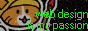

Updates
The Ultrawide Update: I made the website look good on an ultrawide screen I don't have. Oh and I also added a new page to the nav bar, no bigge though.
The Margin Update: I didn't like looking at the unfinished page as it was so I fixed it.
The Poolors Update: I went to Poolers and picked the colors that were loaded when I opended the site. If you though the white background was bad, then how do you feel about this. :)
Benji's Resources
This is gonna be where I put stuff I have made, modified, or links I have found to be shared with whoever I want. Use these however you need, but "perferably" give credit to any modification I have made and to the original creator of the items I modify. "Perferably" take any other actions nessasary to make sure that the original creator can get what he has worked for so that they can make more stuff for me to link to and modify. (perferably as in imma bit lazy. If you can site something better than I can, let me know if you know me.)
For Kart Stuff: Make sure to get the nessasary permissions from the original creator when using mods publically that come from places other than the messageboard. Make sure check if the assets are open before modifying it for your public server as well.
For Discord Client Stuff: Be aware that as of writing that using client mods breaks Discord TOS and makes you liable for banning if they want. Look up how safe it is to use it before installing or just don't use them if you can't risk banning your very inportant account.
If anyone has any sugesstions DM me or send a ping if you know me. I don't think Neocities and Google Drive are the best place for this anyway so if any of you have any better places for this then let me know.
Links
- Benji's Resources Drive Link
- Reserved Custom Map Slots Community ObjSlot Manifest: Lists and tables of reserved map and thing slots.
- Saturn: vanila client that has many great features based on Galaxy.
- Neptune: custom client like CEP forked from Saturn-32p. Won't work with vanilla client games like on the Master Server.
- TOGA's Utilities: Very useful set of map utilities.
- LauncherBlast2: Even though this is meant for SRB2, it is the best launcher for Kart I found so far. It has some quirks such as not being able to add .kart files through the GUI, not remembering the Execute script, and preventing discord streaming from working. Otherwise, it is so much better than Nyoom launcher and is how my pack is so modular.
- Kartinvidya: A kart server from 4chan. I think we can get some fun stuff from here. In fact Neptune even comes from here. It's also a really fun server in general with the kind of people you can't find in most places.
- SRB2Workshop: Some guy and anyone using his stuff were getting oppressed from the Message Board and Master Server so they made this. Blue sphire is stuff that is allowed on the MB/MS and archived mods while red sphire/portleg stuff is not allowed on the MB/MS.
- GrayJay: Here is a fun app that is in alpha. It's not freeware so it has a page where you can pay the app $10, but it trusts you to buy it so you can use the app for free if you can't afford it or not buy it if the app isn't of quality.
- The Misc Stash: An Unlisted Playlist I found on the internet from a youtuber named Toma. It would have been a shame to leave these funny memes as is without sharing them so I did. Check them out.
- Black Box (UserBG) UserPFP Decor: These are links to Discord servers that supply services for discord animated profile pictures, background images, and decorations. They can't be seen unless you have the plugins that make them possible, but once they are on, they are visable on yourself and those who use the plugins. There are also plugins for profile pallets, but that doesn't need a discord server for it as it just uses 3y3 encoding in your about me which is just a copy paste. It is at least avalable through BetterDiscord or Vencord.
- Everhood Sticker Pack: A sticker pack for Signal that ports the Discord server sticker pack. Full credit can (or can't I didn't anything after looking for a minute) be found on the Everhood and Everhood r/Place Discord servers.
An (Unverified) Guide to Compiling SRB2Kart on Windows using MSYS2 and GitHub for Desktop.
- Install MSYS2
- Open MSYS2 and use the pacman package manager to install these items by pasting them into the shell you just opened:
- pacman -S git make mingw-w64-i686-gcc
- pacman -S mingw-w64-i686-make
- pacman -S mingw-w64-x86_64-make
- Install GitHub for desktop. If you know how to use git in other ways, use what you know.
- Clone the Kart Repo you want to compile, either from kart krew or any other repo that is trustworthy.
- Open MSYS2 MINGGW32. There should be a start menu folder under 'All Apps' of each version of MSYS2.
- Change the directory to the 'src' folder in the Kart Repository. Command in MSYS2 is 'cd \c\Users\*YOUR_USER*\Documents\GitHub\Neptune\src\' as an example.
- Run the shell command 'make -j#'. #Sharp Symbol being half the number of threads/cores your CPU has. If you don't know the number, remove '-j#' from every command here so you don't crash the computer.
- You should have a 32bit exe of the game in \*REPO_NAME*\bin\Mingw\Releases.
- Put that exe in any kart install of choice for the games assets. You can also make a new install of kart + extras and put the exe in that.
- If the exe runs without any issues. Congrats, you compiled SRB2Kart.
- If you want to keep compiling, make sure to run 'make clean' in the same shell afterwards. Now I can show you how to make a 64 bit exe, which Kart Krew doesn't even provide.
- Open MSYS2 MINGW32 again, go to the same src folder directory from before and type this in: 'CFLAGS="-Wno-error=format -O3 -pipe" mingw32-make.exe NOUPX=1 NOOBJDUMP=1 WINDOWSHELL=1 -j#'.
- You can also use 'CC=x86_64-w64-mingw32-gcc CFLAGS="-Wno-error=format -O3 -pipe" mingw32-make.exe MINGW64=1 SDL=1 NOUPX=1 NOOBJDUMP=1 WINDOWSHELL=1 -j#' if you want to use the MINGW64 shell instead.
- You should have a compiled exe in "\bin\Mingw\Releases" or "\bin\Mingw64\Releases" respectivly.
And that's it. I don't plan to test the guide myself because I'm goofy like that. But if it ends up working for someone, I'll dub this guide verified by me.
I was able to make this because someone helped me compile Neptune for myself. Thanks for the help.
No guarentee to keep this updated, but there isn't a good enough guide for compiling and I don't know if mine is any better. Hope it works. 👍